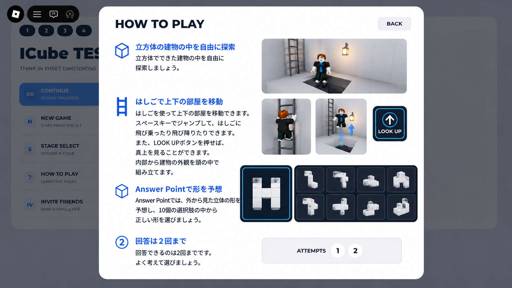
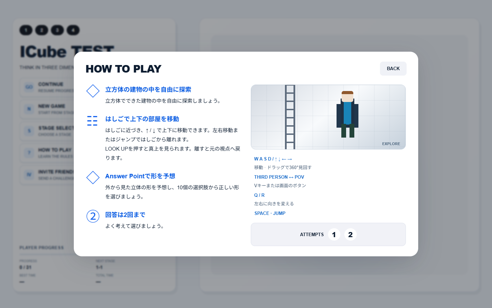
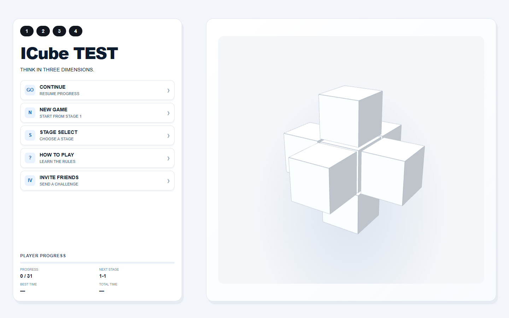
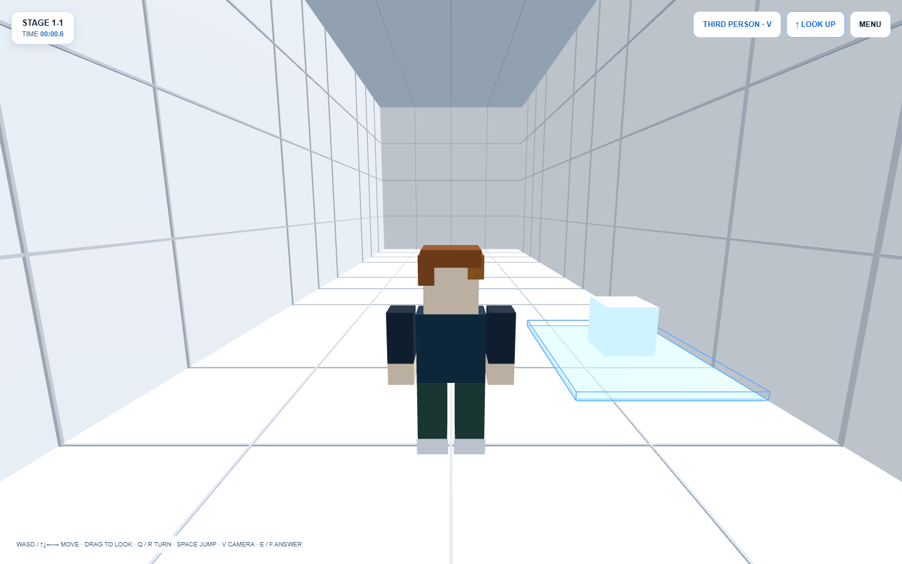

Status: READY FOR USER QA
提供されたRoblox画像をVisual Source of Truthとし、画像から見えないホーム寸法は現行HomeControllerの定義で補完しています。Robloxクライアント内の実操作は、この環境では確認できていません。




| 比較項目 | Robloxコード | Web版 |
|---|---|---|
| 左右比率 | 35% / 60%、間隔5% | 一致 |
| ホーム上位置 | 画面3.5%＋コンテナ2.5% | 5.8vh |
| ボタン高さ・間隔 | 56px / 約8px | 56px / 8px |
| タイトル | 46px | 最大46px、狭い画面で縮小 |
| 角丸・色 | 20px、白、#f2f6fb | 一致 |
| 右側構造 | 中央＋6方向の7キューブ | 同じ構成の手続き生成3D |
Mako確認項目：① Home/UIの再現度 ② Third-person / POV ③ 移動感